2015年北京市中考化学真题 原卷解析
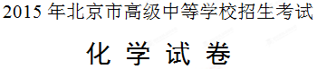
学校______________________姓名____________________准考证号__________________
考生须知 | 1．本试卷共10页，共38道小题，满分80分．考试时间100分钟． 2．在试卷和答题卡上准确填写学校名称、姓名和准考证号． 3．试题答案一律填涂或书写在答题卡上，在试卷上作答无效． 4．在答题卡上，选择题、画图题用2B铅笔作答，其他试题用黑色字迹签字笔作答． 5．考试结束，将本试卷、答题卡和草稿纸一并交回． 6．本试卷化学方程式中的“”和“”含义相同． |
可能用到的相对原子质量
H 1C 12O 16S 32Cl K 39Ca 40Mn 55Cu 64
第一部分 选择题（共20分）
（每小题只有1个选项符合题意．每小题1分）
1．下列气体中，能供给动植物呼吸的是（ ）
A． B．
B． C．
C． D．
D．
【答案】B

考点：氧气的性质及用途
2．钙是构成人体骨骼和牙齿的重要组分．这里的“钙”是指（ ）
A．钙元素B．钙原子C．钙单质D．钙离子
【答案】A

考点：物质的组成
3．右图为空气成分示意图（按体积计算），其中“a”代表的是（ ）

A．氧气B．氮气
C．二氧化碳D．稀有气体
【答案】B
 考点：空气的成分
考点：空气的成分
4．化学肥料对粮食增产起着重要作用，下列能作磷肥的是（ ）
A． B．
B．
C． D．
D．
【答案】D
 考点：化学肥料
考点：化学肥料
5．废弃的易拉罐和塑料瓶属于（ ）
A．厨余垃圾 B．其他垃圾C．可回收物D．有害垃圾
B．其他垃圾C．可回收物D．有害垃圾
【答案】C

考点：金属材料和塑料
6．下列饮品属于溶液的是（ ）
A．蔗糖水B．牛奶C．果粒橙D．豆浆
【答案】A
 考点：溶液的概念及基本特征
考点：溶液的概念及基本特征
7．下列属于纯净物的是（ ）
A．加碘食盐B．干冰C．硬水D．食醋
【答案】B
 考点：混合物和纯净物的判断
考点：混合物和纯净物的判断
8．下列材料属于合金的是（ ）
A．玻璃B．合成橡胶C．生铁D．陶瓷
【答案】C
 考点：合金的概念
考点：合金的概念
9．下列物质常用于改良酸性土壤的是（ ）
A．熟石灰B．烧碱C．食盐D．大理石
【答案】A
 考点：酸碱中和反应的应用
考点：酸碱中和反应的应用
10．下列数据是相应物质的pH，其中呈碱性的是（ ）
A．液体肥皂 B．菠萝汁
B．菠萝汁
C．柠檬汁 D．酱油
D．酱油
【答案】A

考点：溶液的酸碱性
11．下列酒精灯的使用方法正确的是（ ）
A．用嘴吹灭燃着的酒精灯B．用燃着的酒精灯引燃另一只酒精灯
C．向燃着的酒精灯里添加酒精D．万一洒出的酒精在桌面燃烧，用湿布盖灭
【答案】D
【解析】
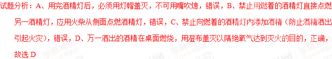
考点：酒精灯的使用方法 12．能用于治疗胃酸过多症的物质是（ ）
12．能用于治疗胃酸过多症的物质是（ ）
A．蔗糖B．食盐
C．小苏打D．食醋
【答案】C
考点：碳酸氢钠的化学性质及用途
13．下列物质的用途中，利用其化学性质的是（ ）
A．干冰用于人工降雨B．天然气用作燃料
C．液氮用作冷冻剂D．银用于制作导线
【答案】B
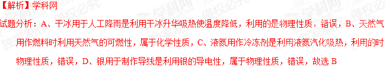
考点：物理性质、化学性质的判断14．一种铁原子的原子核内有26个质子和30个中子，该原子的核外电子数为（ ）
A．4B．26
C．30D．56
【答案】B
考点：原子的结构[来源:Z.xx.k.Com]
15．下列微粒中，能表示2个氢分子的是（ ）
A．2HB．2
C． D．
D．
【答案】D
考点：化学用语的意义
16．下列实验方法一定能达到实验目的的是（ ）
选项 | 实验目的 | 实验方法 |
A | 检验一瓶气体是否为 | 将燃着的木条伸入瓶中 |
B | 鉴别和 | 分别点燃，在火焰上方罩一干冷烧杯 |
C | 鉴别石灰水和 溶液 溶液 | 加入适量的稀盐酸 |
D | 比较Zn、Cu、Ag的金属活动性 | 将Zn和Ag分别放入 溶液中 溶液中 |
【答案】D
 考点：物质的检验、鉴别以及金属活动性的探究
考点：物质的检验、鉴别以及金属活动性的探究
17．a，b两种物质的溶解度曲线如下图所示．下列说法不正确的是（ ）

A．将 ℃时b的饱和溶液加水可变为不饱和溶液
℃时b的饱和溶液加水可变为不饱和溶液
B．将 ℃时a的饱和溶液降温至℃，溶液质量不变
℃时a的饱和溶液降温至℃，溶液质量不变
C．℃时，两种物质的饱和溶液中溶质质量分数a b
b
D．将℃时a、b的饱和溶液分别降温至℃，两溶液的溶质质量分数相等
【答案】B
【解析】
 考点：溶解度曲线的意义
考点：溶解度曲线的意义
18．右图所示实验中，①、④为用紫色石蕊溶液润湿的棉球，②、③为用石蕊溶液染成紫色的干燥棉球．下列能说明密度大于空气且能与水反应的现象是（ ）

A．①变红，③不变红
B．④变红，③不变红
C．①、④变红，②、③不变红
D．④比①先变红，②、③不变红
【答案】D
 考点：CO2的性质
考点：CO2的性质
19．纳米材料具有特殊的性质和功能．纳米二氧化钛 参与的光催化反应可使吸附在其表面的甲醛等物质被氧化，降低空气中有害物质的浓度．正钛酸
参与的光催化反应可使吸附在其表面的甲醛等物质被氧化，降低空气中有害物质的浓度．正钛酸 在一定条件下分解失水可制得纳米
在一定条件下分解失水可制得纳米 .下列说法不正确的是（ ）
.下列说法不正确的是（ ）
A．甲醛对人体健康有害
B．纳米添加到墙面涂料中，可消除甲醛
C．纳米与普通的的性质、功能完全相同
D．制备纳米的反应：
【答案】C
 考点：TiO2的性质及用途
考点：TiO2的性质及用途
20．已知： ，右图表示一定质量的
，右图表示一定质量的 和
和 固体混合物受热过程中，某变量
固体混合物受热过程中，某变量 随时间的变化趋势，纵坐标表示的是（ ）
随时间的变化趋势，纵坐标表示的是（ ）

A．固体中氧元素的质量B．生成的质量
C．固体中的质量D．固体中钾元素的质量分数
【答案】A
 考点：化学反应中各物质量的变化，催化剂的特点
考点：化学反应中各物质量的变化，催化剂的特点
第二部分 非选择题（共60分）
〖生活现象解释〗
下面连环画记录了雯雯参观中国地质博物馆的一天．

请据图回答21－25题
21．（2分）她吃早餐．
（1）早餐食物中有花卷、牛奶、鸡蛋和苹果，其中富含蛋白质的是_______________．
（2）陶瓷餐盘的主要成分之一是硅酸钙
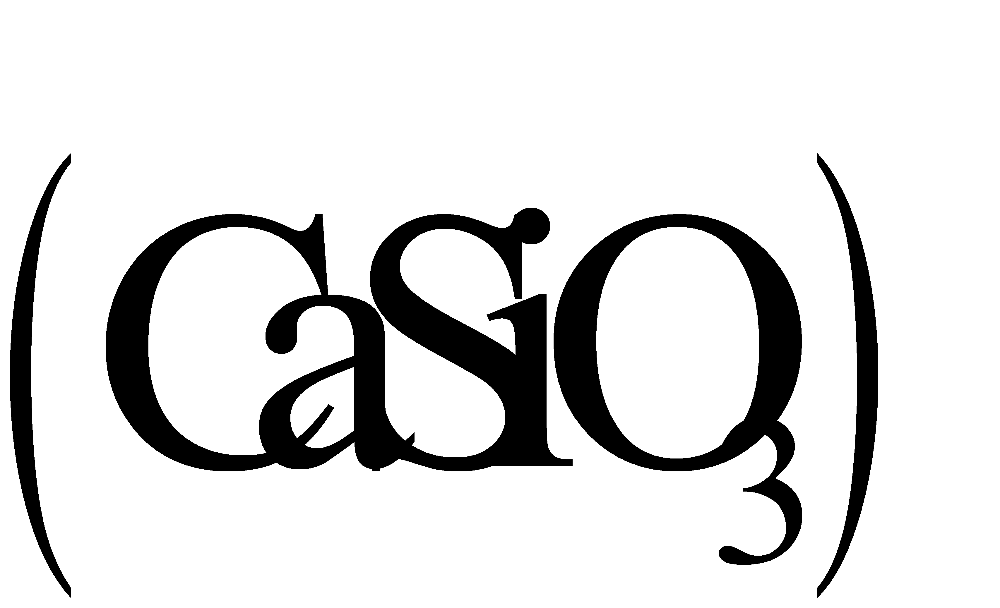
，其中硅元素的化合价是__________．【答案】（1）牛奶，鸡蛋 （2）+4
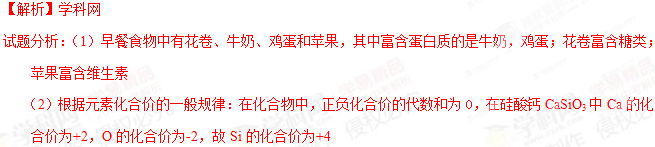
考点：营养物质的食物来源，元素化合价的一般规律22．（2分）她出发了．
（1）她携带的物品中，主要材料属于有机合成材料的是_______________（填字母序号）
A．水壶B．帽子C．背包
（2）如图③所示，乘坐地铁禁止携带的物品中，属于易燃易爆品的是____________．
【答案】（1）AC （2）汽油，酒精
【解析】
考点：有机合成材料，易燃易爆品
23．（1分）她来到博物馆门口．[来源:Zxxk.Com]
同学们在地质学家李四光的大理石雕像前，了解他的生平事迹．大理石的主要成分是______________．
【答案】碳酸钙
考点：大理石的主要成分
24．（3分）她和同学们进入博物馆．
她看到了许多矿石标本，其中的4种矿石及其主要成分如下：
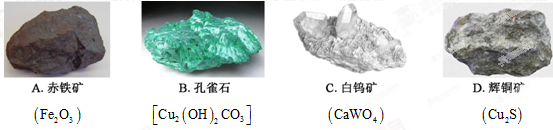
（1）上述矿石标本的主要成分中，所含元素种类最多的是_____________（填字母序号）．
（2）她根据辉铜矿的主要成分，推测以辉铜矿为原料，可制得含铜元素或含硫元素的产品，她的依据是化学反应前后_____________不变．
（3）她依据化学式计算出
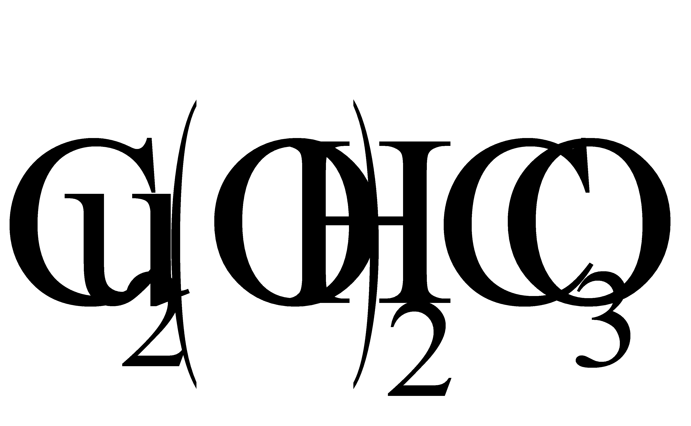
的相对分子质量为222，计算式为___________．【答案】（1）B （2）元素种类 （3）64×2+（16+1）×2+12+16×3
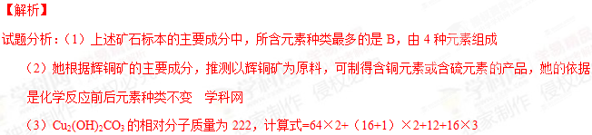
考点：物质的组成元素，质量守恒定律，相对分子质量的计算25．（2分）参观结束时，老师进行了小结，并就金属冶炼和金属回收再利用提出了两个问题，请同学们用化学方程式作答．
（1）工业上用一氧化碳和赤铁矿炼铁的原理是________________________．
（2）废旧钢铁表面的铁锈可用盐酸除去，其原理是____________________________．
【答案】（1）3CO+ Fe2O3 高温 2Fe + 3CO2 （2）Fe2O3+6HCl==2FeCl3+3H2O
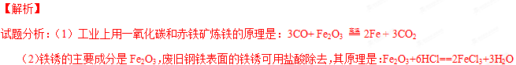
考点：化学方程式的书写26．（2分）人们的生产生活离不开能源。
（1）目前人们使用的燃料大多来自化石燃料，如 、石油、天然气等。
（2）开发和利用新能源是解决能源问题的重要途径。下列利用了新能源的是 （填字母序号）。
A．风力发电B．太阳能飞机
【答案】（1）煤 （2）AB
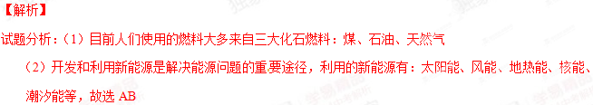
考点：化石燃料及新能源27．（4分）水是一种重要的资源。
（1）电解水实验揭示了水的组成。右图实验中得到氧气的试管是_______________（填“1”或“2”）。
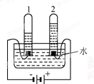
（2）自来水厂净水过程中用到活性炭，其作用是 。
（3）海水淡化可缓解淡水资源匮乏的问题。下图为太阳能海水淡化装置示意图。
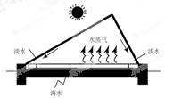
①水变成水蒸气的过程中，不发生变化的是 （填字母序号）。
A．分子质量B．分子种类C．分子间隔
②利用该装置将一定量的海水暴晒一段时间后，剩余海水中氯化钠的质量分数会 （填“变大”、“变小”或“不变”）
【答案】（1）2 （2）吸附水中的颜色、异味 （3）① A，B ② 变大
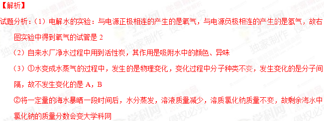
考点：电解水的实验，水的净化，物理变化的微观解释，溶质质量分数的计算28．（4分）亮亮做家务时接触到下列用品。
用品 | 脱氧剂 | 洁厕灵 | 炉灶清洁剂 |
有效成分 | 还原铁粉[来源:学科网] | 盐酸[来源:学§科§网] | 氢氧化钠 |
（1）他清理垃圾时发现一袋脱氧剂，拆开后看到还原铁粉已生锈，铁生锈的原因是 。
（2）他选用洁厕灵清除水垢（主要成分是碳酸钙），用化学方程式表示其原理 。
（3）他清洗炉灶时戴上橡胶手套，以防清洁剂与皮肤直接接触，其原因是 。
（4）做完家务，他用Vc泡腾片冲了一杯饮料。下列Vc泡腾片的主要成分中，属于有机物的是 （填字母序号）。
A．维生素C（） B．柠檬酸（
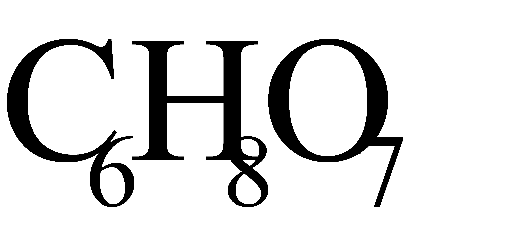
） C．碳酸氢钠（）【答案】（1）Fe与潮湿的空气接触 （2）CaCO3+2HCl==CaCl2+H2O+CO2↑
（3）NaOH有强腐蚀性 （4）A、B
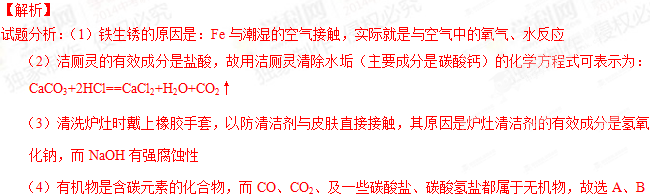
考点：铁生锈的原因，酸、碱的性质，有机物的概念【科普阅读理解】
29．（5分）阅读下面科普短文（原文作者：段翰英等）。
我国制作泡菜的历史悠久。制作泡菜是把新鲜蔬菜泡在低浓度的盐水里，经发酵而成。泡菜品种繁多、风味独特、口感鲜脆。
蔬菜中含有硝酸盐。硝酸盐对人体无直接危害，但转化成亚硝酸盐后，就会产生危害。亚硝酸盐[如亚硝酸钠（ ）]与胃酸（主要成分是盐酸）反应，产生亚硝酸（
）]与胃酸（主要成分是盐酸）反应，产生亚硝酸（ ）和氯化物（如
）和氯化物（如 ）。亚硝酸不稳定，产生的二氧化氮进入血液与血红蛋白结合，导致中毒。
）。亚硝酸不稳定，产生的二氧化氮进入血液与血红蛋白结合，导致中毒。
泡菜中含亚硝酸盐吗？含量有多少？含量受什么因素影响呢？
经实验测定发现，食盐水浓度和泡制时间对泡菜中亚硝酸盐含量有一定影响。下图为室温下，食盐水浓度和泡制时间与芹菜泡制过程中亚硝酸盐含量的关系。

用不同的蔬菜进行测定，变化趋势与芹菜相似。[来源:学|科|网]
实验表明，发酵温度对泡菜中亚硝酸盐的生成量及生成时间也具有明显的影响。泡菜发酵过程中，泡制温度较高时，亚硝酸盐含量最大值出现的早，且数值低。这与温度较高有利于乳酸菌的繁殖有关。
实验还表明，泡制过程中添加姜汁和维生素C，都能有效地减少亚硝酸盐的生成。
现代医学证明，泡菜中的乳酸和乳酸菌对人体健康有益，具有抑制肠道中的腐败菌生长、降低胆固醇等保健作用。但是，有些泡菜盐分或糖分过高，对高血压和糖尿病等慢性病患者不利。另外，泡制过程也会造成某些营养素的流失。（有删改）
依据文章内容，回答下列问题。
（1）泡菜中的亚硝酸盐是由 转化成生的。[来源:学.科.网]
（2）亚硝酸钠能与盐酸反应，该反应属于基本反应类型中的 反应。
（3）室温下，用芹菜制作的泡菜，最佳食用时间是 （填字母序号，下同）。
A．泡制2－3天B．泡制5－6天C．泡制12天后
（4）下列关于制作泡菜的说法中，合理的是 。
A．最好加入一些姜汁
B．最好在较低温度下泡制
C．最好加入一些富含维生素C的水果
D．最佳食用期的泡菜中亚硝酸盐的含量与泡制时的食盐水浓度无关
（5）请你为喜欢吃泡菜的人提一条食用泡菜的建议： 。
【答案】（1）硝酸盐 （2）复分解 （3）C （4）A、C、D
（5）食用超过12天的泡菜或合理食用泡菜的量
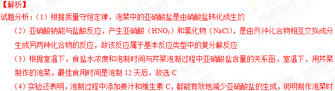
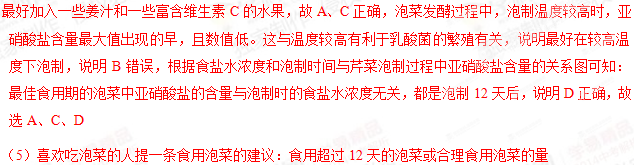
考点：质量守恒定律，复分解反应，信息题的解答
【生产实际分析】
30．（3分）生物浸出技术在金属冶炼中应用广泛。嗜热细菌在65－80℃酸性水溶液及氧气存在下，能氧化黄铜矿（主要成分）产生硫酸盐，进而生产铜和绿矾，主要流程如下：
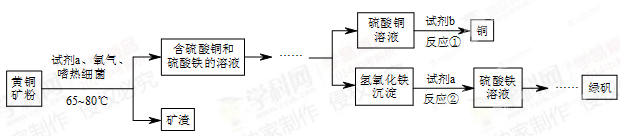
（1）分离出矿渣的操作是 。
（2）若试剂b为Fe粉，反应①的化学方程式为 。
（3）氢氧化铁与试剂a发生中和反应，反应②的化学方程式为 。
【答案】（1）过滤 （2）Fe+CuSO4==Cu+FeSO4
（3）2Fe(OH)3+3H2SO4==Fe2(SO4)3+6H2O
【解析】
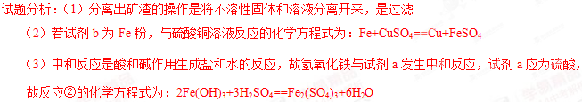
考点：基本实验操作，化学方程式的书写31．（3分）某烟气脱硫的工艺不仅能消除，还能将其转化为石膏（
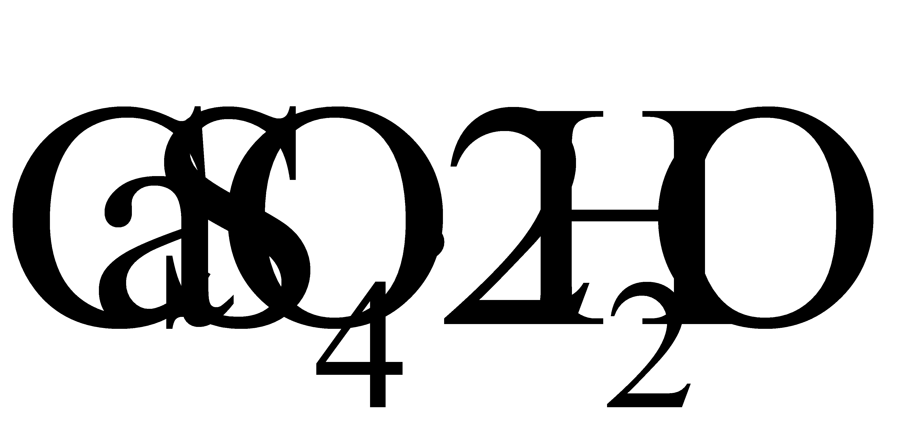
）等产品，实现“变废为宝”。主要物质转化关系如下：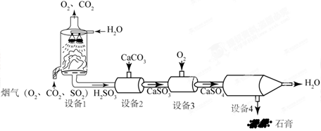
（1）设备1中，通过喷淋水脱去烟气中的，该反应的化学方程式为 。
（2）设备2中，加入的目的是将
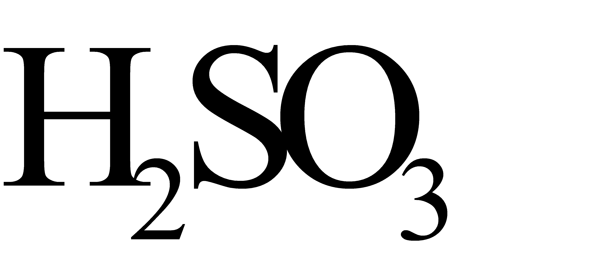
转化为 。（3）设备3中，反应前后化合价发生改变的元素是 。
【答案】（1）SO2 + H2O === H2SO3 （2）CaSO3 （3）O和S
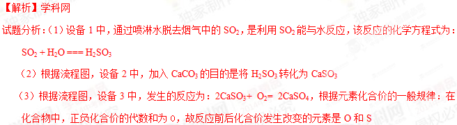
考点：化学方程式的书写，元素化合价的一般规律【物质组成和变化分析】
32．（5分）甲、乙、丙、丁4种常见物质，由氢、碳、氧、钠、钙5种元素中的2-3种组成。
（1）甲俗称纯碱，其化学式为 。
（2）乙是一种氧化物，遇水放出大量的热，乙的名称是 。
（3）丙与氧气在点燃条件下反应，其微观示意图如下，请在方框中补全相应微粒的图示。
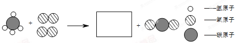
（4）如右图所示（夹持仪器略去，、均关闭），打开，待液体全部流下，立即关闭，观察到产生大量气泡，且烧杯中丁的溶液变浑浊。充分反应后，打开和，使液体全部流入锥形瓶，瓶中无明显现象。
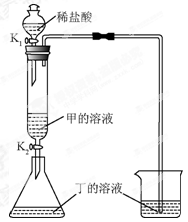
①用化学方程式表示烧杯中溶液变浑浊的原因 。
②取反应后锥形瓶中的溶液，测得，则该溶液中含有的溶质除HCl外，还有 。
【答案】（1）Na2CO3 （2）氧化钙 （3）图略
（4）①CO2 +Ca(OH)2 ==CaCO3↓+ H20 ②NaCl、CaCl2
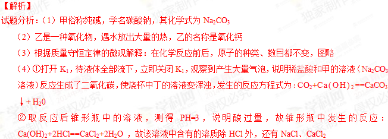
考点：物质的俗称，质量守恒定律，酸、碱的化学性质，反应后溶液中溶质成分的判断33．（3分）实验小组同学做了如下实验。
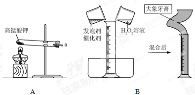
（1）A中反应的化学方程式为 ，将带火星的木条置于a处，若观察到 ，说明已有氧气产生。
（2）B中现象是声带涌出柱状的泡沫，可形象地称为“大象牙膏”，其原理主要是
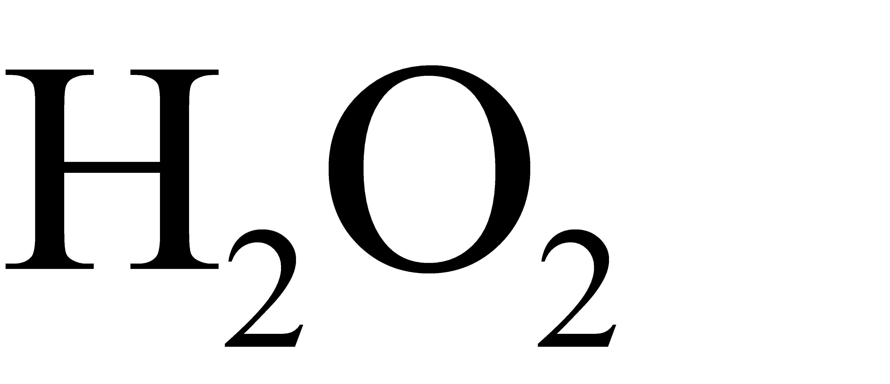
在某些催化剂作用下迅速分解产生水和氧气。反应的化学方程式为 。【答案】（1）2KMnO4 △K2MnO4 + MnO2 + O2↑ 木条复燃 （2）2H2O2 催化剂 2H2O+ O2↑
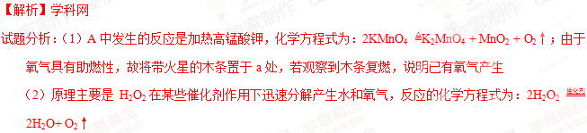
考点：化学方程式的书写，氧气的检验34．（3分）依据下图进行实验（夹持仪器略去）。实验过程：①通入，点燃酒精灯，一段时间后，a、b中均无明显现象；②熄灭酒精灯，立即改通，a中无明显现象，b中红磷燃烧。
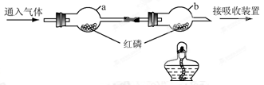
（1）实验过程②中，红磷燃烧的化学方程式为 。
（2）实验过程②中，对比a、b中的实验现象，可知可燃物燃烧的条件之一是 。
（3）实验过程中，能说明可燃物燃烧需要氧气的实验是 。
【答案】（1）4P + 5O2 点燃 2P2O5 （2）燃烧需要温度达到可燃物的着火点
（3）步骤①中b通N2，不燃烧；步骤②中b通O2，燃烧
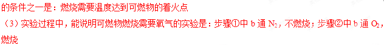
考点：燃烧条件的探究，化学方程式的书写
35．（4分）3%的硼酸溶液可用于清洗皮肤的小面积创伤。现配制300g质量分数为3%的硼酸溶液，实验操作如下：
（1）称量硼酸固体的质量：在下图中分别标出所选砝码的质量和游码的示数。
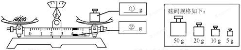
（2）量取水的体积：用量筒取 mL水（
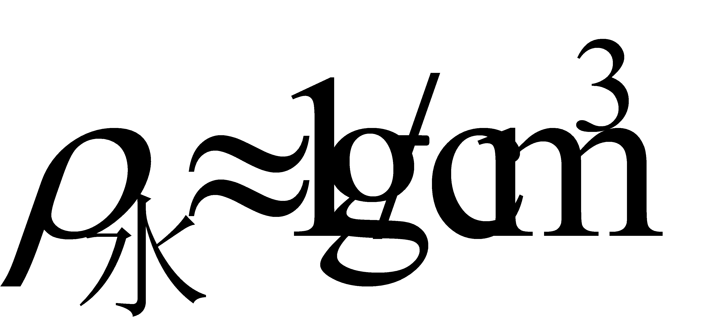
）。（3）溶解：用到的玻璃仪器是 。
（4）装瓶、贴标签：在右图的标签中填上相应的内容。
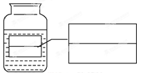
【答案】（1）5g 4g （2）291 （3）烧杯、玻璃棒
（4）硼酸 3%
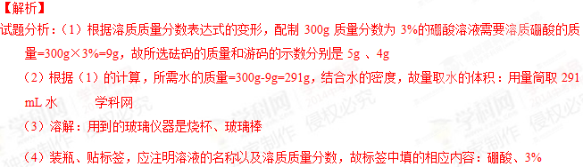
考点：溶质质量分数表达式，配制的过程【实验原理分析】
36．（4分）利用下图装置进行实验。实验前、、均已关闭。
内容 装置 | 【实验1】制备气体 | 【实验2】测定气体含量 |
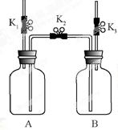 | Ⅰ．打开，用注射器向盛有锌粒的A中注入稀硫酸，直至液面浸没下端导管口 Ⅱ．在上方导管口收集气体 | Ⅰ．A（容积）中为用排空气法收集的，B中装满水。用注射器向A中注入15mL NaOH溶液（足量），充分反应 Ⅱ．打开和 |
（1）检查装置气密性：保持关闭，打开、，向B中加水至液面浸没下端导管口，用手捂住A瓶外壁，说明装置在左侧气密性良好的现象是 ；用同样原理可以检查装置另一侧的气密性。
（2）实验1中，锌与稀硫酸反应的化学方程式为 ；气体收集完毕后，在不拆卸装置的情况下，使A中未反应的稀硫酸大部分转移到B中的操作是 。
（3）实验2中，当B中液面不再变化时，测得B中减少了160mL水，则A中的体积分数约为 %。
【答案】（1）B装置左侧导管口有气泡冒出 （2）Zn + H2SO4 === ZnSO4 + H2↑
打开K2，K3，关闭K1 （4）50%
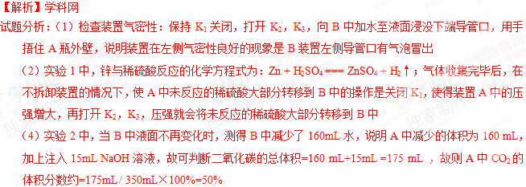
考点：装置气密性的检查，装置的压强变化，二氧化碳的化学性质等【科学探究】
37．（6分）众所周知，酚酞溶液遇溶液变红。但是，在分组实验中（如右图所示），出现了意想不到的现象：有的溶液变红后褪色；有的出现白色浑浊物。
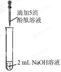
【提出问题】分组实验中，出现意想不到的现象的原因是什么呢？
【查阅资料】酚酞溶液由酚酞固体溶于酒精配制而成。
【猜想与假设】
Ⅰ．红色褪去，与溶液和空气中的反应有关。
Ⅱ．红色褪去，与NaOH溶液的浓度有关。
Ⅲ．出现白色浑浊物，与酚酞溶液的浓度有关。
【进行实验】
实验 | 实验操作 | 实验现象 |
1 | 向盛有2 mL 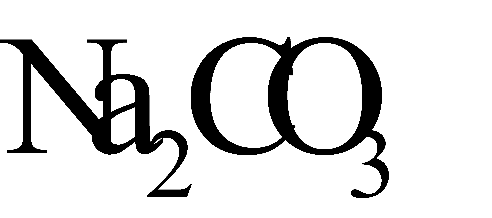 溶液的试管中滴加5滴0.5%的酚酞溶液 | 溶液变红 |
2 | 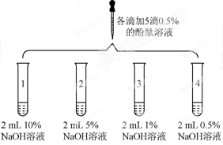 | 1号试管红色褪去 2号试管5min红色褪去 3号试管30min红色明显变浅 4号试管120min红色无明显变化 |
3[来源:学科网ZXXK] | 取3支试管，分别加入2 mL水，…… | 酚酞溶液浓度/% | 浑浊程度[来源:学科网ZXXK] |
5 | 大量浑浊物 |
2 | 少量浑浊物 |
| 无浑浊物 |
【解释与结论】
（1）与反应的化学方程式为 。
（2）实验1的现象表明，猜想与假设1 （填“成立”或“不成立”）。
（3）由实验2得出结论：出现“溶液变红后褪色”现象的原因是 。
（4）实验3的操作步骤：取3支试管，分别加入水， 。
【反思与评价】
（5）依据现有实验，为了确保红色不变，若酚酞溶液浓度为
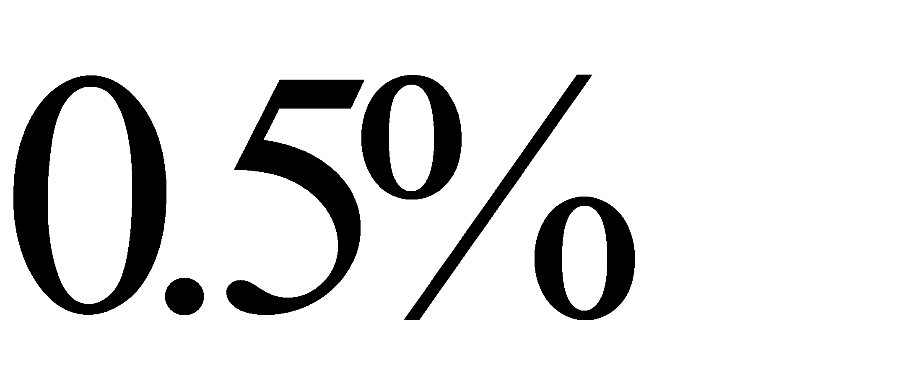
，建议选用NaOH溶液的浓度为 %。
（6）有同学认为，仅通过实验3得出“猜想与假设Ⅲ成立”证据不足，理由是 。
【答案】（1）2NaOH + CO2 == Na2CO3 + H2O （2）不成立
（3）与NaOH浓度有关，浓度过高会使酚酞褪色
（4）分别向三支试管中滴加5滴5%，2%，0.5%的酚酞溶液
（5）0.5% （6）没有控制NaOH溶液的浓度相等
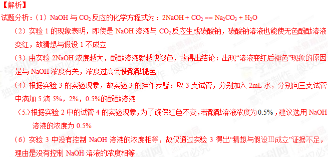
考点：NaOH溶液的化学性质等【实际应用定量分析】
38．（4分）乙炔（
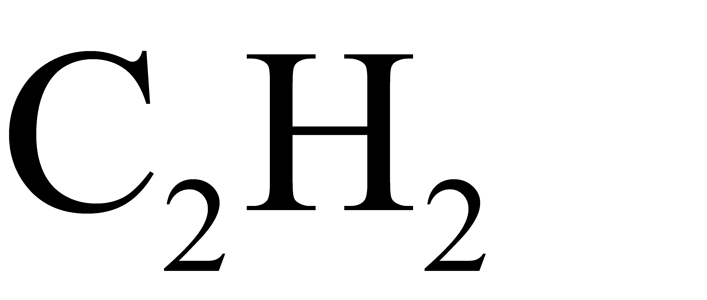
）是生产聚氯乙烯的重要原料。用电石（主要成分为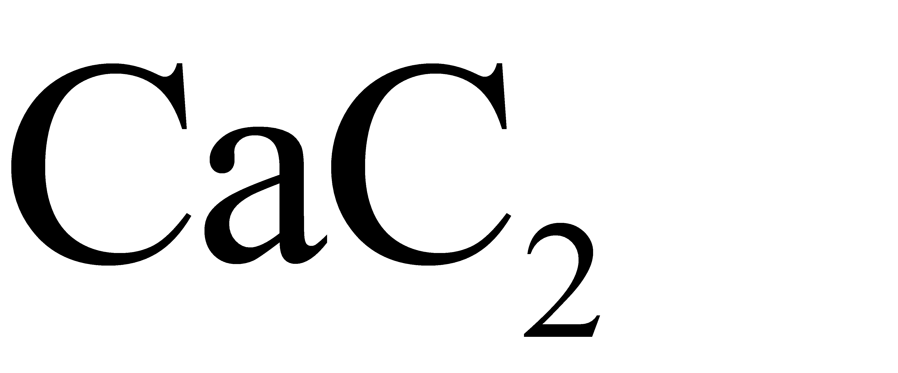
）与水反应可制取乙炔，最终还可得到电石渣。某电石渣中含氢氧化钙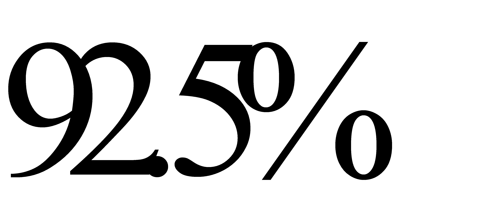
,其余为杂质，此电石渣可用于处理电镀厂排出的酸性废水。（1）乙炔中碳、氢元素的质量比为 。
（2）100kg上述电石渣中氢氧化钙的质量为 。
（3）用上述电石渣处理含硫酸的酸性废水（假设电石渣中的杂质、废水中其他成分均不参加反应），求至少需要电石渣的质量（写出计算过程及结果）。
【答案】（1）12：1 （2）92.5kg （3）160kg
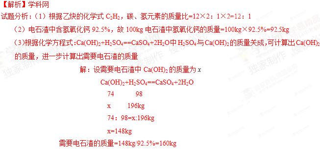
考点：根据化学式、化学方程式进行计算